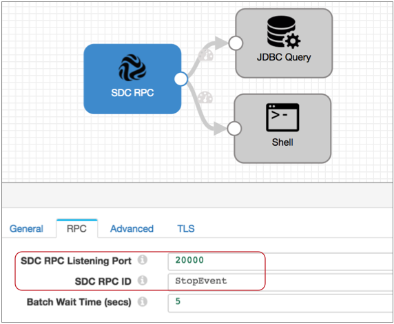
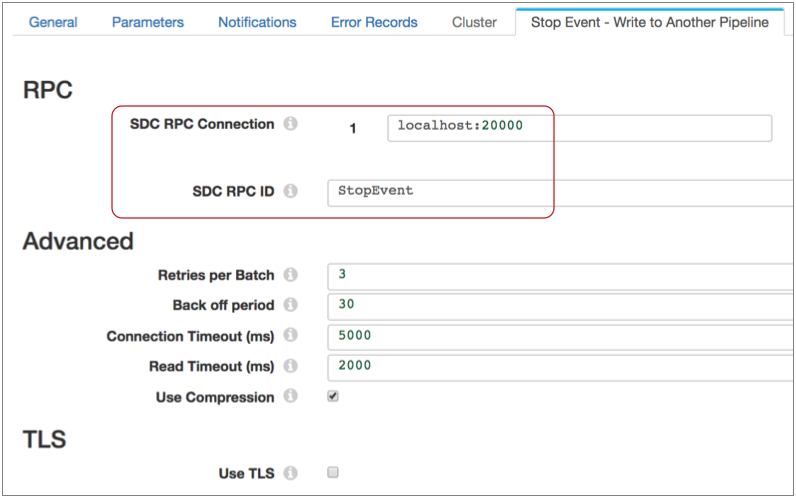
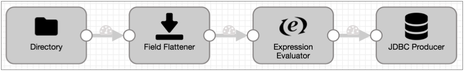
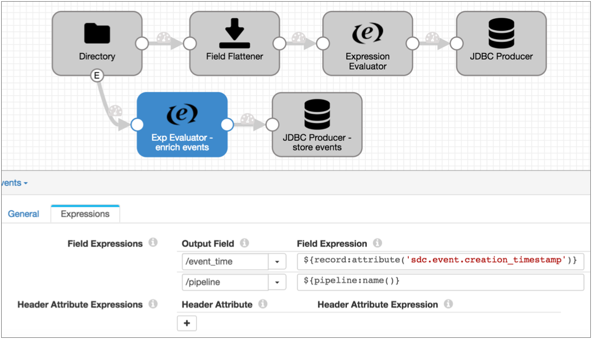
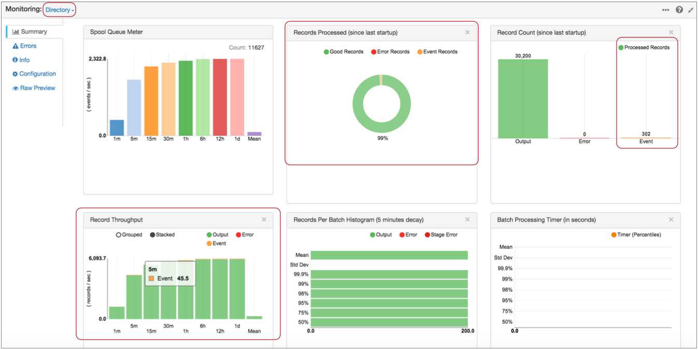

Dataflow Triggers
Dataflow Triggers Overview
Dataflow triggers are instructions for the event framework to kick off tasks in response to events that occur in the pipeline. For example, you can use dataflow triggers to start a MapReduce job after the pipeline writes a file to HDFS. Or you might use a dataflow trigger to stop a pipeline after the JDBC Query Consumer origin processes all available data.
- event generation
- The event framework generates pipeline-related events and stage-related events. The framework generates pipeline events only when the pipeline starts and stops. The framework generates stage events when specific stage-related actions take place. The action that generates an event differs from stage to stage and is related to how the stage processes data.
- task execution
- To trigger a task, you need an executor. Executor stages perform tasks in Data Collector or external systems. Each time an executor receives an event, it performs the specified task.
- event storage
- To store event information, pass the event to a destination. The destination writes the event records to the destination system, just like any other data.
Pipeline Event Generation
The event framework generates pipeline events in Data Collector standalone pipelines at specific points in the pipeline lifecycle. You can configure the pipeline properties to pass each event to an executor or to another pipeline for more complex processing.
Not available in Data Collector Edge pipelines.
- Pipeline Start
- The pipeline start event is generated as the pipeline initializes, immediately after it starts and before individual stages are initialized. This can allow time for an executor to perform a task before stages initialize.
- Pipeline Stop
- The pipeline stop event is generated as the pipeline stops, either manually, programmatically, or due to a failure. The stop event is generated after all stages have completed processing and cleaning up temporary resources, such as removing temporary files. This allows an executor to perform a task after pipeline processing is complete, before the pipeline fully stops.
- Virtual processing - Unlike stage events, pipeline events are not
processed by stages that you configure in the canvas. They are passed to an
event consumer that you configure in the pipeline properties.
The event consumer does not display in the pipeline’s canvas. As a result, pipeline events are also not visualized in data preview or pipeline monitoring.
- Single-use events - You can configure only one event consumer for each
event type within the pipeline properties: one for the Start event and one for
the Stop event.
When necessary, you can pass pipeline events to another pipeline. In the event consuming pipeline, you can include as many stages as you need for more complex processing.
For a solution that describes a couple ways to use pipeline events, see Offloading Data from Relational Sources to Hadoop.
Using Pipeline Events
You can configure pipeline events in standalone pipelines. When you configure a pipeline event, you can configure it to be consumed by an executor or another pipeline.
Pass an event to an executor when the executor can perform all of the tasks that you need. You can configure one executor for each event type.
Pass an event to another pipeline when you need to perform more complex tasks in the consuming pipeline, such as passing the event to multiple executors or to an executor and destination for storage.
Pass to an Executor
You can configure a pipeline to pass each event type to an executor stage. This allows you to trigger a task when the pipeline starts or stops. You configure the behavior for each event type separately. And you can discard any event that you do not want to use.
- In the pipeline properties, select the executor that you want to consume the event.
- In the pipeline properties, configure the executor to perform the task.
Example
Say you want to send an email when the pipeline starts. First, you configure the pipeline to use the Email executor for the pipeline start event. Since you don't need the Stop event, you can simply use the default discard option:

Then, also in the pipeline properties, you configure the Email executor. You can configure a condition for the email to be sent. If you omit the condition, the executor sends the email each time it receives an event:

Pass to Another Pipeline
Pass pipeline events to another pipeline to perform more complex processing than simply passing the event to a single consumer. The event-consuming pipeline must use the SDC RPC origin, then can include as many other stages as you require.
To achieve the same behavior as passing to an executor, where a processing failure causes the event-generating pipeline to fail, configure the relevant stages to stop the event-consuming pipeline upon error. Upon error, the event-consuming pipeline then stops and passes the message back to the event-generating pipeline, which then transitions to a failure state.
For example, say you pass a pipeline event to a pipeline that routes the event to two executors. To ensure that the event-generating pipeline fails if either of the executors fail, configure the On Record Error property on the General tab of both executors, setting the property to Stop Pipeline.
This causes the event-consuming pipeline to stop on error, which causes the event-generating pipeline to transition to a failure state.
- Configure the pipeline to consume the event.
- Configure the event-generating pipeline to pass the event to the event-consuming pipeline, including details from the SDC RPC origin.
- Start the event-consuming pipeline before you start the event-generating pipeline.
Example
Say you want the Stop event to trigger a shell script that kicks off another process and a JDBC query. To do this, first configure the event-consuming pipeline. Use an SDC RPC origin and note the highlighted properties, because you will use them to configure the event-generating pipeline:

Then you configure the event-generating pipeline to pass the Stop event to your new pipeline. Note that if you don't need to use the Start event, you can simply use the default discard option:

Then you configure the Stop Event - Write to Another Pipeline properties, using the SDC RPC details from your event-consuming pipeline:

Stage Event Generation
You can configure certain stages to generate events. Event generation differs from stage to stage, based on the way the stage processes data. For details about each the event generation for each stage, see "Event Generation" in the stage documentation.
| Stage | Generates events when the stage... |
|---|---|
| Amazon S3 origin |
For more information, see Event Generation for the Amazon S3 origin. |
| Azure Data Lake Storage Gen1 origin |
For more information, see Event Generation for the Azure Data Lake Storage Gen1 origin. |
| Azure Data Lake Storage Gen2 origin |
For more information, see Event Generation for the Azure Data Lake Storage Gen2 origin. |
| Directory origin |
For more information, see Event Generation for the Directory origin. |
| File Tail origin |
For more information, see Event Generation for the File Tail origin. |
| Google BigQuery origin |
For more information, see Event Generation for the Google BigQuery origin. |
| Google Cloud Storage origin |
For more information, see Event Generation for the Google Cloud Storage origin. |
| Groovy Scripting origin |
For more information, see Event Generation for the Groovy Scripting Origin. |
| Hadoop FS Standalone origin |
For more information, see Event Generation for the Hadoop FS Standalone origin. |
| JavaScript Scripting origin |
For more information, see Event Generation for the JavaScript Scripting Origin. |
| JDBC Multitable Consumer origin |
For more information, see Event Generation for the JDBC Multitable Consumer origin. |
| JDBC Query Consumer origin |
For more information, see Event Generation for the JDBC Query Consumer origin. |
| Jython Scripting origin |
For more information, see Event Generation for the Jython Scripting Origin. |
| MapR FS Standalone origin |
For more information, see Event Generation for the MapR FS Standalone origin. |
| MongoDB origin |
For more information, see Event Generation for the MongoDB origin. |
| Oracle Bulkload origin |
For more information, see Event Generation for the Oracle Bulkload origin. |
| Oracle CDC Client origin |
For more information, see Event Generation for the Oracle CDC Client origin. |
| Salesforce origin |
For more information, see Event Generation for the Salesforce origin. |
| SAP HANA Query Consumer origin |
For more information, see Event Generation for the SAP HANA Query Consumer origin. |
| SFTP/FTP/FTPS Client origin |
For more information, see Event Generation for the SFTP/FTP/FTPS Client origin. |
| SQL Server 2019 BDC Multitable Consumer origin |
For more information, see Event Generation for the SQL Server 2019 BDC Multitable Consumer origin. |
| SQL Server CDC Client origin |
For more information, see Event Generation for the SQL Server CDC Client origin. |
| SQL Server Change Tracking origin |
For more information, see Event Generation for the SQL Server Change Tracking origin. |
| Teradata Consumer origin |
For more information, see Event Generation for the Teradata Consumer origin. |
| Windowing Aggregator processor |
For more information, see Event Generation for the Windowing Aggregator processor. |
| Groovy Evaluator processor |
For more information, see Event Generation for the Groovy Evaluator processor. |
| JavaScript Evaluator processor |
For more information, see Event Generation for the JavaScript Evaluator processor. |
| Jython Evaluator processor |
For more information, see Event Generation for the Jython Evaluator processor. |
| TensorFlow Evaluator processor |
For more information, see Event Generation for the TensorFlow Evaluator processor. |
| Windowing Aggregator processor |
For more information, see Event Generation for the Windowing Aggregator processor. |
| Amazon S3 destination |
For more information, see Event Generation for the Amazon S3 destination. |
| Azure Data Lake Storage (Legacy) destination |
For more information, see Event Generation for the Azure Data Lake Storage (Legacy) destination. |
| Azure Data Lake Storage Gen1 destination |
For more information, see Event Generation for the Azure Data Lake Storage Gen1 destination. |
| Azure Data Lake Storage Gen2 destination |
For more information, see Event Generation for the Azure Data Lake Storage Gen2 destination. |
| Google Cloud Storage destination |
For more information, see Event Generation for the Google Cloud Storage destination. |
| Hadoop FS destination |
For more information, see Event Generation for the Hadoop FS destination. |
| Hive Metastore destination |
For more information, see Event Generation for the Hive Metastore destination. |
| Local FS destination |
For more information, see Event Generation for the Local FS destination. |
| MapR FS destination |
For more information, see Event Generation for the MapR FS destination. |
| SFTP/FTP/FTPS Client destination |
For more information, see Event Generation for the SFTP/FTP/FTPS Client destination. |
| ADLS Gen1 File Metadata executor |
For more information, see Event Generation for the ADLS Gen1 File Metadata executor. |
| ADLS Gen2 File Metadata executor |
For more information, see Event Generation for the ADLS Gen2 File Metadata executor. |
| Amazon S3 executor |
For more information, see Event Generation for the Amazon S3 executor. |
| Databricks Job Launcher executor |
For more information, see Event Generation for the Databricks Job Launcher executor. |
| Databricks Query executor |
For more information, see Event Generation for the Databricks Query executor. |
| HDFS File Metadata executor |
For more information, see Event Generation for the HDFS File Metadata executor. |
| Hive Query executor |
For more information, see Event Generation for the Hive Query executor. |
| JDBC Query executor |
For more information, see Event Generation for the JDBC Query executor. |
| MapR FS File Metadata executor |
For more information, see Event Generation for the MapR FS File Metadata executor. |
| MapReduce executor |
For more information, see Event Generation for the MapReduce executor. |
| Spark executor |
For more information, see Event Generation for the Spark executor. |
Using Stage Events
You can use stage-related events in any way that suits your needs. When configuring the event stream for stage events, you can add additional stages to the stream. For example, you might use a Stream Selector to route different types of events to different executors. But you cannot merge the event stream with a data stream.
- Task execution streams that route events to an executor to
perform a task.
Not available in Data Collector Edge pipelines. Executors are not supported in Data Collector Edge pipelines.
- Event storage streams that route events to a destination to store event information.
Task Execution Streams
A task execution stream routes event records from the event-generating stage to an executor stage. The executor performs a task each time it receives an event record.
In Data Collector Edge pipelines, you cannot use task execution streams. Executors are not supported in Data Collector Edge pipelines.
For example, you have a pipeline that reads from Kafka and writes files to HDFS:

When Hadoop FS closes a file, you would like the file moved to a different directory and the file permissions changed to read-only.
Leaving the rest of the pipeline as is, you can enable event handling in the Hadoop FS destination, connect it to the HDFS File Metadata executor, and configure the HDFS File Metadata executor to files and change permissions. The resulting pipeline looks like this:

If you needed to set permissions differently based on the file name or location, you could use a Stream Selector to route the event records accordingly, then use two HDFS File Metadata executors to alter file permissions, as follows:

Event Storage Streams
An event storage stream routes event records from the event-generating stage to a destination. The destination writes the event record to a destination system.
Event records include information about the event in record header attributes and record fields. You can add processors to the event stream to enrich the event record before writing it to the destination.
For example, you have a pipeline that uses the Directory origin to process weblogs:

Directory generates event records each time it starts and completes reading a file, and the event record includes a field with the file path of the file. For auditing purposes, you'd like to write this information to a database table.
Leaving the rest of the pipeline as is, you can enable event handling for the Directory origin and simply connect it to the JDBC Producer as follows:

${record:attribute('sdc.event.creation_timestamp')}${pipeline:name()}The Expression Evaluator and the final pipeline looks like this:

Executors
Executors perform tasks when they receive event records.
Not available in Data Collector Edge pipelines. Executors are not supported in Data Collector Edge pipelines.
- ADLS Gen1 File Metadata executor
- Changes file metadata, creates an empty file, or removes a file or directory in Azure Data Lake Storage Gen1 upon receiving an event.
- ADLS Gen2 File Metadata executor
- Changes file metadata, creates an empty file, or removes a file or directory in Azure Data Lake Storage Gen2 upon receiving an event.
- Amazon S3 executor
- Creates new Amazon S3 objects for the specified content, copies objects within a bucket, or adds tags to existing Amazon S3 objects upon receiving an event.
- Databricks Job Launcher executor
- Starts a Databricks job for each event.
- Databricks Query executor
- Runs a Spark SQL query on Databricks upon receiving an event.
- Email executor
- Sends a custom email to the configured recipients upon receiving an event. You can optionally configure a condition that determines when to send the email.
- Hive Query executor
- Executes user-defined Hive or Impala queries for each event.
- HDFS File Metadata executor
- Changes file metadata, creates an empty file, or removes a file or directory in HDFS or a local file system upon receiving an event.
- Pipeline Finisher executor
- Stops the pipeline when it receives an event, transitioning the pipeline to a Finished state. Allows the pipeline to complete all expected processing before stopping.
- JDBC Query executor
- Connects to a database using JDBC and runs one or more specified SQL queries.
- MapR FS File Metadata executor
- Changes file metadata, creates an empty file, or removes a file or directory in MapR FS upon receiving an event.
- MapReduce executor
- Connects to HDFS or MapR FS and starts a MapReduce job for each event.
- SFTP/FTP/FTPS Client executor
- Connects to an SFTP, FTP, or FTPS server and moves or removes a file upon receiving an event.
- Shell executor
- Executes a user-defined shell script for each event.
- Spark executor
- Connects to Spark on YARN and starts a Spark application for each event.
Logical Pairings
You can use events in any way that works for your needs. The following tables outline some logical pairings of event generation with executors and destinations.
Pipeline Events
| Pipeline Event Type | Event Consumer |
|---|---|
| Pipeline Start |
|
| Pipeline Stop |
|
Origin Events
| Event Generating Origin | Event Consumer |
|---|---|
| Amazon S3 |
|
| Azure Data Lake Storage Gen1 |
|
| Azure Data Lake Storage Gen2 |
|
| Directory |
|
| File Tail |
|
| Google BigQuery |
|
| Google Cloud Storage |
|
| Hadoop FS Standalone |
|
| JDBC Multitable Consumer |
|
| JDBC Query Consumer |
|
| MapR FS Standalone |
|
| MongoDB |
|
| Oracle Bulkload |
|
| Oracle CDC Client |
|
| Salesforce |
|
| SAP HANA Query Consumer |
|
| SFTP/FTP/FTPS Client |
|
| SQL Server 2019 BDC Multitable Consumer |
|
| SQL Server Change Tracking |
|
| Teradata Consumer |
|
Processor Events
| Event Generating Processor | Event Consumer |
|---|---|
| Windowing Aggregator |
|
| Groovy Evaluator |
|
| JavaScript Evaluator |
|
| Jython Evaluator |
|
| TensorFlow Evaluator |
|
Destination Events
| Event Generating Destination | Event Consumer |
|---|---|
| Amazon S3 |
|
| Azure Data Lake Storage (Legacy) |
|
| Azure Data Lake Storage Gen1 |
|
| Azure Data Lake Storage Gen2 |
|
| Google Cloud Storage |
|
| Hadoop FS |
|
| Hive Metastore |
|
| Local FS |
|
| MapR FS |
|
| SFTP/FTP/FTPS Client |
|
Executor Events
| Event Generating Executor | Event Consumer |
|---|---|
| ADLS Gen1 File Metadata executor |
|
| ADLS Gen2 File Metadata executor |
|
| Amazon S3 |
|
| Databricks Job Launcher executor |
|
| Databricks Query executor |
|
| HDFS File Metadata executor |
|
| Hive Query executor |
|
| JDBC Query executor |
|
| MapR FS File Metadata executor |
|
| MapReduce executor |
|
| Spark executor |
|
Event Records
Event records are records that are created when a stage or pipeline event occurs.
Most event records pass general event information in record headers, such as when the event occurred. They also can include event-specific details in record fields, like the name and location of the output file that was closed.
Event records generated by the File Tail origin are the exception - they include all event information in record fields.
Event Record Header Attributes
In addition to the standard record header attributes, most event records include record header attributes for event information such as the event type and when the event occurred.
${record:attribute('sdc.event.creation_timestamp')}Note that all record header attributes are String values. For more information about working with record header attributes, see Record Header Attributes.
| Event Record Header Attribute | Description |
|---|---|
| sdc.event.type | Event type. Defined by the stage that generates the event. For information about the event types available for an event generating stage, see the stage documentation. |
| sdc.event.version | Integer that indicates the version of the event record type. |
| sdc.event.creation_timestamp | Epoch timestamp when the stage created the event. |
Viewing Events in Data Preview, Snapshot, and Monitor Mode
When generated, stage events display in data preview, Monitor mode, and snapshot as event records. Once a record leaves the event-generating stage, it is treated like a standard record.
Pipeline events generated by the event framework do not display in data preview or Monitor mode. However, you can enable data preview to generate and process pipeline events.
Viewing Stage Events in Data Preview and Snapshot
In data preview and when reviewing snapshots of data, stage-related event records display in the event-generating stage marked as "event records," and they appear below the batch of standard records.
After leaving the stage, the record displays like any other record.
For example, the Directory origin below generates an event record as it starts reading a file for data preview:

When you select the Local FS destination where the event record is written, you see that the same event record no longer displays the event record label. It is treated like any other record:

Viewing Stage Events in Monitor Mode
In Monitor mode, the event-generating stage provides statistics about stage-related event records. Once the event records leave the stage, Monitor mode treats event records like any other record.
For example, when you run and monitor the pipeline featured above, the Directory origin information displays event records in its statistics:

Notice, in the Record Throughput chart, that you can hover over graphics to get the exact number of records that they represent.
And when you select the Local FS destination where the event record is written, Monitor mode displays statistics for the records written to the destination. At this point, the event records are treated like any other record:

Executing Pipeline Events in Data Preview
You can enable pipeline event execution in data preview to test event processing.
When you enable pipeline event generation while previewing data, the event framework generates the pipeline start event when you start data preview and the stop event when you stop data preview. If you configured the pipeline to pass the events to executors or to event-consuming pipelines, the events are passed and trigger the additional processing.
To enable generating pipeline event execution during data preview, use the Enable Pipeline Execution data preview property.
Summary
- You can use the event framework in any pipeline where the logic suits your needs.
- The event framework generates pipeline-related events and stage-related events.
- You can use pipeline events in standalone pipelines.
- Pipeline events are generated when the pipeline starts and stops. For details,
see Pipeline Event Generation.
Not available in Data Collector Edge pipelines.
- You can configure each pipeline event type to pass to a single executor or to
another pipeline for more complex processing.
Not available in Data Collector Edge pipelines.
- Stage events are generated based on the processing logic of the stage. For a list of event-generating stages, see Stage Event Generation.
- Events generate event records to pass relevant information
regarding the event, such as the path to the file that was closed.
Stage-generated event records differ from stage to stage. For a description of stage events, see "Event Record" in the documentation for the event-generating stage. For a description of pipeline events, see Pipeline Event Records.
- In the simplest use case, you can route stage event records to a destination to save event information.
- You can route stage event records to an executor stage so it can perform a task
upon receiving an event.
For a list of logical event generation and executor pairings, see Logical Pairings.
Not available in Data Collector Edge pipelines. Executors are not supported in Data Collector Edge pipelines.
- You can add processors to event streams for stage events or to consuming
pipelines for pipeline events.
For example, you might add an Expression Evaluator to add the event generation time to an event record before writing it to a destination. Or, you might use a Stream Selector to route different types of event records to different executors.
- When working with stage events, you cannot merge event streams with data streams.
- You can use the Dev Data Generator and To Event development stages to generate events for pipeline development and testing. For more information about the development stages, see Development Stages.
- In data preview and in Monitor mode, stage-generated event records display separately in the event-generating stage. Afterwards, they are treated like any standard record.
- You can configure data preview to generate and execute pipeline events.
For examples of how you might use the event framework, see the case studies earlier in this chapter.